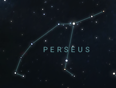

| Constellation | Description | Image |
|---|---|---|
| Aquarius | Aquarius, also known as the "Water-Bearer", can be found the in "Sea" region of the sky. This is due to it being surrounded by constellations also related to water, such as Pisces (the fish) and Eridanus (the river). It is one of the zodiac constellations. | |
| Aries | Aries, also known as the "Ram", is the second-smallest zodiac constellation and can be best seen during the month of December. Being so small, it can be hard to find, but just look for its brightest star, Hamal, an orange giant. It is one of the zodiac constellations. | |
| Pisces | Pisces, also known as the "Fish", is a constellation in the "Sea" region, similar to Aquarius. Sometimes it can be very hard to spot because all its stars are dim. It is one of the zodiac constellations. | |
| Andromeda & Pegasus | Andromeda, also known as the "Chained Maiden" and Pegasus, the "Winged Horse", are unique because they are joined together by the star Alpheratz (blue rectangle). Messier 31, the Andromeda galaxy, is located near these two constellations as well. | |
| Perseus | Perseus, also known as the "Hero", is extremely easy to spot because of its distinct shape and postion in the sky. All you need to do is find Cassiopeia and look south, and you will come across its bright branch shape. |  |
| Cassiopeia | Cassiopeia, also known as the "Seated Queen", can be recognized by its large W-shaped pattern. It serves as a landmark for finding other harder-to-spot constellations. |
For more information, go to stellarium.org.
Back to top.
Copyright © 2023 Andrew Li